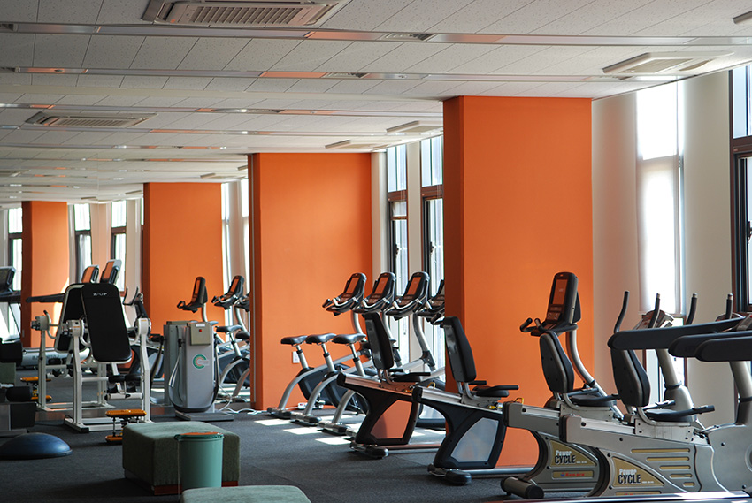
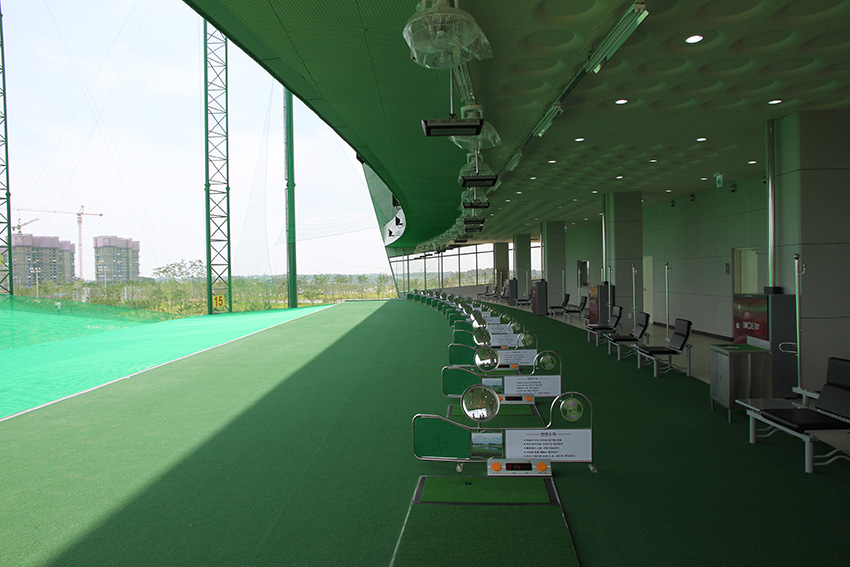
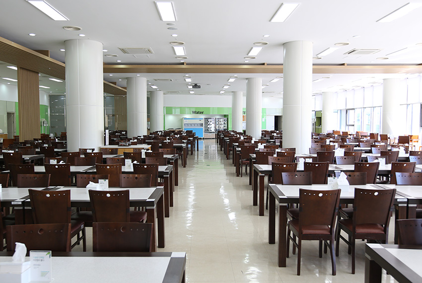
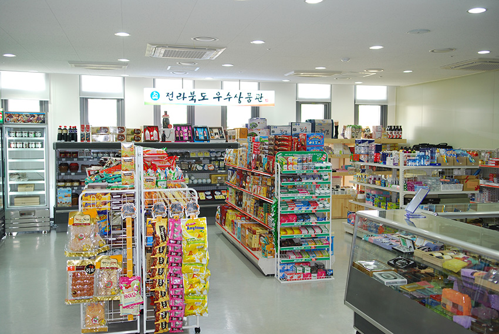
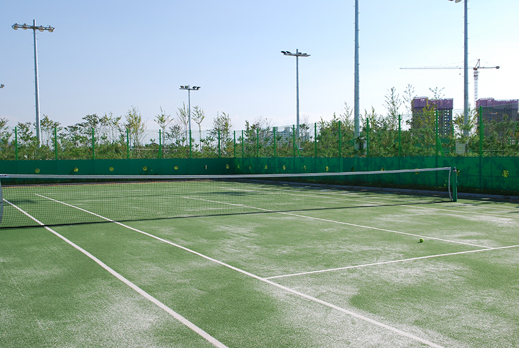
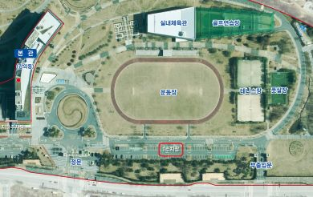
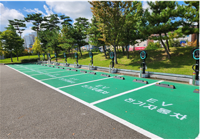

기관소개
건강/편의시설

건강증진센터
- 위치
- 생활관(목민관) 지하 1층
- 면적
- 463㎡
- 주요용도
- 교육생 및 직원 건강 증진
- 설치장비
- 러닝머신 11대, 고정식 자전거 9대, 각종 헬스 장비 17종
- 이용안내
-
-
이용시간
평일 06:00~22:00(22:00 이후에는 자동 소등)
-
이용 시 유의사항
1실내용 운동복, 운동화 착용※ 남‧녀 사이즈별 운동복(반발티 및 반바지) 비치
2사용 전 입구에 비치된 이용대장 작성※ 필요물품 구매 등 센터 운영에 참고자료로 활용 목적
-
이용시간
잔디운동장
- 위치
- 본관 앞
- 면적
- 7,000㎡
- 주요용도
- 교육생 체육활동 및 체육대회, 축구 등
- 설치장비
- 고정식 의자(250석), 우레탄 육상트랙, 운동장
- 이용안내
- 개방기간 : 매년 5월~ 10월(잔디 보호‧활착을 위해 일정 기간 사용 제한)※ 이용절차에 대해서는 추후 확정되는 대로 안내 예정
체육관
- 위치
- 잔디운동장 사열대 뒤편
- 규모
- 배구, 농구, 족구, 배드민턴장, 스탠드 174석, 취미소양실 6실
- 면적
- 1,998㎡
- 주요용도
- 체육교과 수업, 교육생 체육활동 및 체육대회 등
- 설치장비
- 배구, 족구, 배드민턴, 농구, 탁구 시설 등
- 이용 시 유의사항
- 실내 전용 운동복 및 운동화 착용

골프연습장
- 위치
- 체육관 2~3층
- 규모
- 2층 : 15타석(좌타석 1), 3층 : 15타석(좌타석 1)
- 면적
- 1,063㎡
- 주요용도
- 체육교과 수업 및 인근학교 체육수업, 교육생 건강증진
- 편의시설
- 탈의실 및 샤워실(2층 : 남성용, 3층 : 여성용)
- 이용안내
- 이용시간 : 일출 후 ~ 일과 전, 일과 후 ~ 일몰 전
이용대상 : 중‧고교 체육수업 등 교육목적으로만 개방 - 이용 시 유의사항
- 교육생 명찰, 출입증, 공무원증 지참, 입구에 비치된 이용대장 작성, 안전수칙 준수 및 편의시설 파손 유의

식당
- 위치
- 본관 지하 1층
- 규모
- 520석(일반석 : 410석 / 사랑룸 : 48석 / 다솜룸 : 62석)
- 면적
- 1,599㎡
- 이용안내
- 이용시간 : 아침(7:30~8:30), 점심(11:30~13:00), 저녁(17:30~18:30)※ 금요일 저녁, 토요일, 일요일, 법정공휴일은 휴무식비 : 5,000원(식권 발매를 통해 이용 가능)
- 문의사항
- 행정지원과 관리팀(☎ 063-907-5034)

편의점
- 규모
- 본관 지하 1층
- 면적
- 129.9㎡
- 판매 물품
- 사무용품 및 기념품, 생활용품, 기타 식료품 등※ LOGODI 커피숍 병행 운영(아메리카노 판매), 컴퓨터 관련 주변기기(랜선, 마우스) 등은 미판매
- 이용안내
- 이용시간 : 월~금 09:00~18:00(점심시간 : 11:20~11:50)※ 단, 금요일은 유연근무제로 인해 16:30까지 운영판매품목 및 커피숍 이용 관련 문의(☎ 063-907-5360, 5015)
의무실
- 규모
- 본관 1층 101호(중앙로비 옆)
- 면적
- 119.5㎡
- 주요용도
- 교육생, 직원 건강 증진 및 응급 처치
- 구비물품
- 각종 상비약, 간단한 응급처치 기구, 체지방 검사기기 및 회복실 등
- 이용안내
- 이용시간 : 09:00~18:00(점심시간 : 12:00~13:00)
토‧일요일 및 공휴일은 미운영 - 비상전화
- ☎ 063-907-5352
조깅트랙 상시개방
- 규모
- 400m 우레탄 육상트랙
- 위치
- 본관 앞 잔디운동장
- 주요용도
- 교육생, 직원 및 지역주민 체육활동, 산책로
- 이용안내
- 조깅트랙은 별도로 개방대상‧시간, 신청절차를 두고 있지 않으며, 지역주민 산책 및 체육활동을 위해 24시간(연중무휴) 상시 개방하고 있습니다.

테니스장 준개방
- 위치
- 본관 앞 잔디운동장 우측
- 규모
- 크레이 코트 2면/ 인조잔디 코트 2면
- 면적
- 2,214㎡
- 주요용도
- 교육생 체육활동
- 구비시설
- 휴게실(컨테이너), 자동 볼머신기, 연습용 테니스공 400개
- 이용안내
- 테니스장은 개방시간에 한하여 별도 신청없이 누구나 이용이 가능합니다. 개방시간은 평일 06:00 ~ 08:00, 18:00 ~ 22:00 / 토요일 06:00 ~ 22:00 / 일요일 및 공휴일 06:00 ~ 일몰시 까지입니다.(허가받지 않은 강습, 시설을 이용한 영리행위 및 행사 진행 등 금지))

주차장 상시개방
- 위치
- 정문 경비초소 우측 제1주차장
- 규모
- 야외 지상 주차장 123면
- 면적
- 3,115㎡(제1~4주차장 전체 면적 : 14,893㎡)
- 주요용도
- 방문객 및 지역주민 편의 증진을 위한 주차 공간 제공
- 이용안내
- 주차장은 별도로 개방대상‧시간, 신청절차를 두고 있지 않으며, 거주지, 방문지 등에 주차공간이 부족하거나 인근에 임시로 차량을 주차해야 할 경우 교육생 및 지역주민을 대상으로 24시간(연중무휴) 상시 개방하고 있습니다.※ 장애인 전용 주차장 18면과 여성 우선 주차장 11면은 제2~4주차장에서 이용 가능※ 각 주차장 위치는 정문 경비실에 문의(063-907-5960)

전기차 충전소 상시개방
- 위치
- 1주차장
- 규모
- 7kW 완속 12대
- 주요용도
- 전기자동차 충전용
- 이용시간
- 연중무휴, 24시간
- 이용 시 유의사항
- 1전기차 충전구역 내 일반차량 주치금지(과태료 부과대상)
2충전이 완료된 전기차는 이동조치(충전중에만 주차가능)※ 고객센터: 1522-2573
페이지 만족도 및 담당부서 안내
현재 페이지에 만족하십니까?
페이지 내용과 사용 편의성에 대한 의견을 들려주세요.